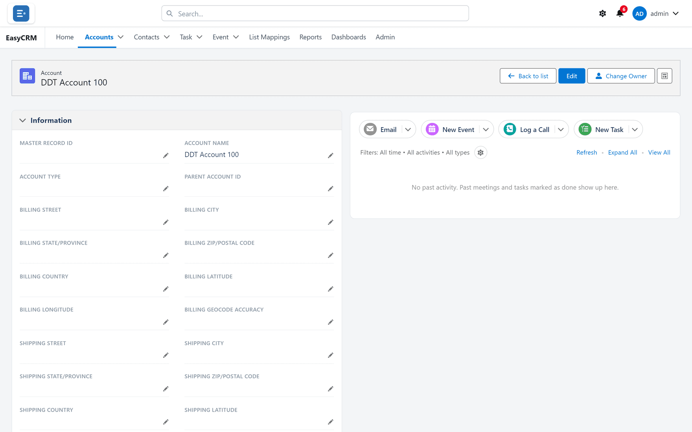
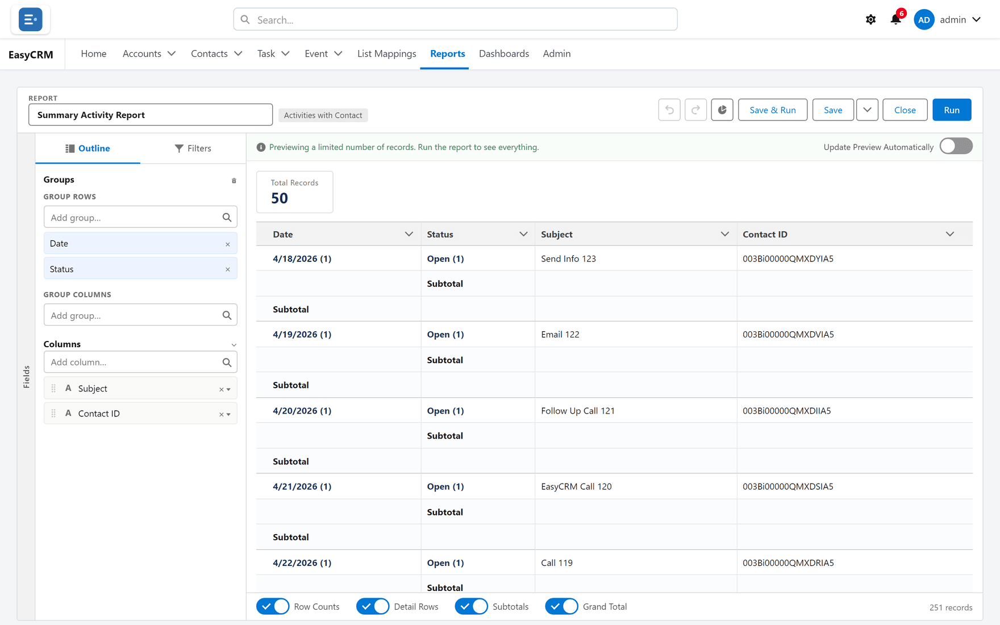
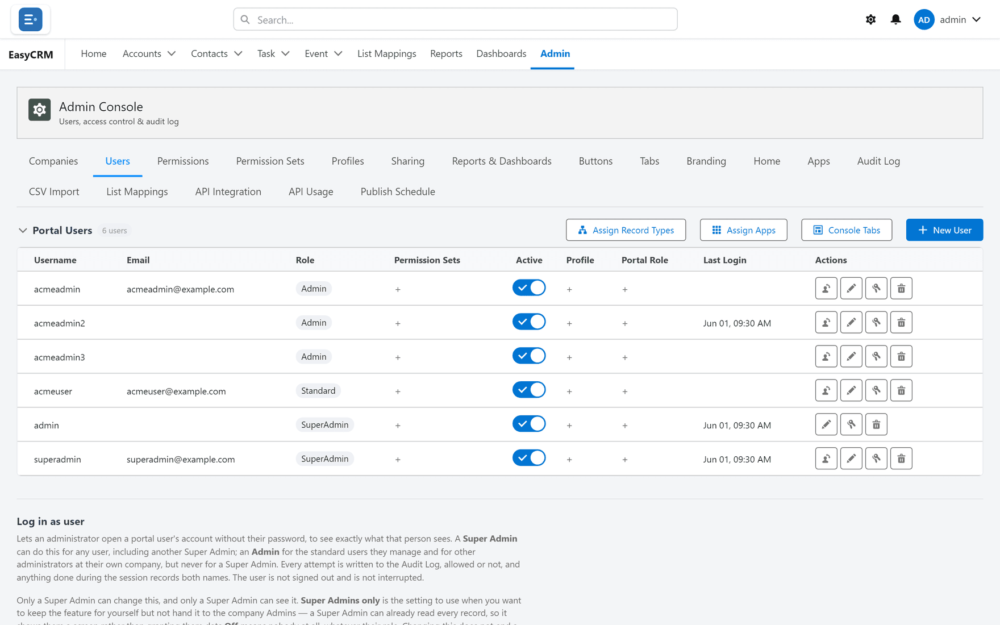

Introduction and features
What EasyCRM is, what it offers, and what each capability gives you — written in plain words for anybody deciding whether it fits.
A customer portal that puts your Salesforce data in front of your whole company, without a Salesforce licence for each person.
EasyCRM is a web portal your company signs in to. It shows your customers, contacts, tasks, meetings, reports and files in one simple screen. It runs in an ordinary browser on a computer, tablet or phone. There is nothing to install.
The information lives in Salesforce. The people using EasyCRM do not need Salesforce logins, never see Salesforce, and do not need to know it is there. Change something in one and it changes in the other — it is the same data, not a copy.
Salesforce charges for every person who signs in. In most companies only a handful of people genuinely work inside Salesforce all day. Everybody else just needs to look things up, add a note, or read a report.
Paying full price for those people is expensive, and it hands them a large, complicated product when they needed a small part of it. EasyCRM gives them that small part.
| Audience | What they get |
|---|---|
| Companies on Salesforce | A way to open their data to more people without more licences. |
| Agencies and service providers | One portal serving several client companies, each kept separate. |
| Teams who mostly read | A screen simple enough to learn in ten minutes. |
| Managers | Live reports and dashboards instead of exported spreadsheets. |
Every user belongs to a company, and almost every setting can be made company by company — which apps they see, which report folders they reach, which administration tabs their own admins get. One installation can serve many client companies, each seeing only its own world.
Six things it changes, and what each one is worth.
People who only read, or only update a few fields, use EasyCRM instead of a Salesforce seat.
A short list of tabs, the fields you choose, and nothing else. No Salesforce vocabulary on screen.
Every list, report and dashboard reads the real data at the moment it is opened.
A full access model — per-person permissions, record sharing, a management hierarchy, and rules that narrow access where needed.
Your name, logo, colours and a sign-in page you design yourself.
Fields, layouts, tabs, apps, buttons, reports, dashboards and the sign-in page are all configured on screen.
What people use every day, and what each part offers.

Tables of records with saved sets of columns, filters and sorting. People switch between views, pin a favourite as their default, and search within a list.
Filters on any field, with operators such as equals, contains and greater than. Several filters combine with AND, OR, NOT and brackets.
Each person picks which fields appear as columns, and in what order. The choice is remembered and affects nobody else.
An administrator chooses which fields appear, groups them into sections, and sets which related records show underneath — separately for the page and for the new-record window.
Full edit mode, or a pencil beside a single field. Required fields are marked; errors name the field at fault.
One object can come in several kinds, each with its own fields and options — a customer account and a supplier account on the same object. Which kinds a company may use is set per company.
Every record has an owner, and ownership can be transferred. Ownership usually drives who can see the record.
Linked records shown on the page — the contacts at an account, the tasks on a contact. Which lists appear is configurable.
Calls, tasks, meetings and emails recorded against the record they concern, in one timeline. Filter by date, type or whether something is done; expand everything to read detail; open the full history on its own page. Tasks appear on the assignee's home page and are flagged when overdue; events appear as upcoming.
One box that searches every kind of record the person is allowed to see, with results grouped by type as you type.
Upload files to the portal or attach them to a record. Views for recent, your own, and everything. Preview, download or delete.
A bell in the top bar with a count of unread items, opening a list of what has happened recently; click one to jump to what it refers to.
The portal emails people automatically: their credentials when an account is created, a new password when one is reset, a warning when an account is locked after repeated failed sign-ins, and a notice when an account is closed. Emails written against a record are sent from the portal too, as plain or formatted text.
Record-count tiles, an announcement you write, each person's own open tasks, their recent records, upcoming events and quick links. Cards can be turned on or off, and each app can have its own home page.
Each person chooses a top menu or a side menu, a colour theme, and comfortable or compact row spacing.
A full report builder, not a list of canned reports.

Choose what the report is about, pick columns, add filters, group and total — with a preview updating as you work. Undo and redo throughout; nothing saves until you say so.
Report types cover one object or two linked ones, in both forms: only records that have a match, or every record whether or not it has one.
| Shape | What it is | Answers |
|---|---|---|
| Tabular | A plain list | "Show me the records." |
| Summary | Grouped, with subtotals | "How many per owner?" |
| Matrix | Grouped down and across | "How many per owner, per month?" |
Group by any field, several levels deep, down the side and across the top. Total any number column with sum, average, minimum or maximum — subtotals per group and a grand total.
Invent a column that sorts existing values into categories you name — ranges for numbers, chosen values for text and picklists. Then group, total and filter by it.
Row-level formulas calculate once per record. Summary formulas calculate once per group from the totals, at whichever grouping level you choose.
Bar, column, line, pie, donut and gauge, drawn from the report's groupings. Where a report has several groupings, the chart can be re-sliced by any of them.
A reader can change filter values while looking at a report, without changing what is saved. Filters the author locks cannot be changed by anybody.
Folders control who can see what, with private and shared folders and starred favourites. Reports and folders are shared with companies at read or edit level, and a report can also be shared with chosen people. Access can be revoked.
Existing Salesforce reports can be imported into the portal rather than rebuilt, carrying their columns, filters and grouping across.
Formula columns stay aligned between a portal report and its Salesforce counterpart, in both directions.
Clone or "save as" any report to experiment on a copy. Export as a formatted report, keeping groups and subtotals, or as plain details for further work.
Several answers on one screen, built from your reports.
| Tile | Shows |
|---|---|
| Metric | One large number. |
| Bar / Column | Groups compared side by side. |
| Line | A value over time. |
| Pie / Donut | Parts of a whole. |
| Gauge | Progress towards a target. |
| Table | Rows straight from the report. |
Move and resize tiles on a grid whose fineness you set. Separate light or dark themes for the page and for the tiles.
A filter bar narrows the whole dashboard at once. Because each tile reads a different report, you map the filter to the matching field on each one — fields with the same name are matched automatically.
A dashboard either shows each person their own numbers, or shows everybody the same company-wide totals.
A complete model, in two independent halves.
| Half | Decides | Set by |
|---|---|---|
| Permissions | What somebody may do | Per person, per object |
| Sharing | Which records they may do it to | Defaults, rules, hierarchy |
Read, create, edit and delete, plus permission to change the page layout for everybody, plus field-by-field control over which fields a person may edit.
A portal user can be tied to an Account. Records are then filtered to that account automatically, using a field you nominate per object — and child records follow through a parent field, so a contact, task or file belonging to the account comes with it. A user-match field can also tie records to the person directly.
A profile is the baseline for a kind of person. A permission set is extra access handed to particular people on top, and only ever adds.
A default per object — private, public read, or public read and write — then standing rules that widen it. Rules can target records by owner or by field criteria, and grant to a company, a role or a named group. Rules can be made inactive instead of deleted.
Named groups of people — which can contain roles and other groups — used by sharing rules. A reporting hierarchy where access flows upward, so managers see what their people see.
The one mechanism that narrows access: of the records somebody could otherwise see, keep only those matching your criteria.
Beyond standing rules, an individual record can be shared with a named person or a group, at a chosen access level, with the reason recorded.
A profile can limit the hours during which its people may sign in, and the IP address ranges they may sign in from.
Repeated failed sign-ins lock an account for a period, and the person is emailed. Sessions expire on their own, so an abandoned browser does not stay signed in.
Each profile can start its people on a particular tab rather than the home page.
A portal user can be linked to a Salesforce user, and users have a manager relationship of their own alongside the role hierarchy.
Pick any record and see everybody who can access it, with the reason for each — owner, default, a named sharing rule, or the hierarchy.
Eighteen console areas, plus layouts and the sign-in designer. All configured on screen.

Create users, set role and company, email passwords automatically, reset them, and deactivate anybody who leaves without deleting their records or history.
Admins manage only their own company. A Super Admin decides which console tabs each company's admins even see.
An administrator can view the portal exactly as another person sees it. Every attempt is logged whether allowed or refused, actions record both names, the user is not interrupted, and the feature is off until deliberately enabled.
Choose which tabs exist and in what order; group tabs into named apps; assign apps per company. Add your own buttons to record pages, which can open a web address with the record loaded, start a Salesforce flow, create a linked child record, or run a background action. Developers can add bespoke screens through a documented extension point.
The portal works out which of its own fields are missing from which objects and creates them for you, rather than leaving an administrator to add each one by hand.
Page layouts already defined in Salesforce can be pulled into the portal as a starting point.
Choose fields, arrange them in named sections, order them, and choose related lists — with a separate, shorter field set for the new-record window. Removing a field never deletes data.
The portal can carry your identity entirely.
| What you can set | Covers |
|---|---|
| Name and logo | The portal name, your logo, and the browser tab icon. |
| Colour theme | Presets or your own colours, previewed as you choose. |
| Navigation default | Top bar or side bar as the starting layout. |
| Sign-in page | Heading, tagline, bullet points and footer. |
| Sign-in designer | A block-based editor for the whole page. |
Build it from blocks — headings, text, logos, links, separators, spacers — placed across the two halves of the screen, with alignment, width, height and tone per block. Preview on desktop and phone. Save drafts privately, publish when ready, and restore an earlier version if a change was wrong. Switch back to the standard design at any time without losing your custom one.
A deliberate limit. The username box, password box and sign-in button cannot be moved, hidden or imitated by anything added in the designer. No design change — by anybody — can turn the sign-in page into something that collects credentials elsewhere.
Getting information into the portal, and out to other systems.
Load many records from a CSV file, matching columns to fields on screen. A summary reports how many were created and lists anything that failed, with the reason.
For lists that arrive repeatedly from the same source, save the column-to-field matching once, per company.
Issue keys that let another system fetch your portal data. Each key is attached to a person, scoped to chosen objects and fields, and can be filtered to a subset of records. Secrets are shown once; keys can be edited, regenerated or revoked.
Request volumes by period, company and user, with export, so you can see which integration is busiest and which keys are idle.
Request logs are kept for a period and then tidied up automatically.
Portal reports can be re-created as Salesforce reports on a schedule. Off until deliberately enabled; if a published report is deleted, the schedule pauses rather than silently re-creating it.
A digest reports what published, what did not, and why.
A record of what happened, and tools for when something is wrong.
Sign-ins, failed sign-ins, password changes, administration changes and every impersonation attempt — filterable and searchable. It cannot be edited, deleted or disabled by anybody, including a Super Admin.
A checklist confirming the portal's own access, field visibility, whether the site is live, and whether email can be delivered — each reported as done or needing attention.
Together, the record-access viewer and view-as-user cover most support questions: who can see this, and what does it look like to them.
Built for real data volumes, not demonstration data.
| Capability | What it means |
|---|---|
| Large lists | Lists of tens of thousands of records open and scroll smoothly, drawing only what is on screen. |
| Exact counts | Totals are the true figure, not a capped approximation. |
| Wide reports | Matrix reports with many columns render without stalling the browser. |
| Dashboard caching | Dashboards reuse their last result to open quickly, with a refresh for the latest numbers. |
| Cache control | Caching can be switched off for reports, org-wide or per company, where live figures matter more than speed. |
What is involved in running it.
| Aspect | Detail |
|---|---|
| Form | A managed package installed into your Salesforce org. |
| Where data lives | In your own Salesforce org. EasyCRM does not hold a separate copy. |
| For end users | A web address, a username and a password. No installation, no Salesforce login. |
| Devices | Any modern browser, on desktop, tablet or phone. |
| Address | The Salesforce-provided address, or your own domain. |
| Licensing | Limits on companies, and on administrators and standard users per company, with per-company overrides. |
| Updates | Delivered as package upgrades; configuration is preserved. |
Everything EasyCRM offers, on one page.